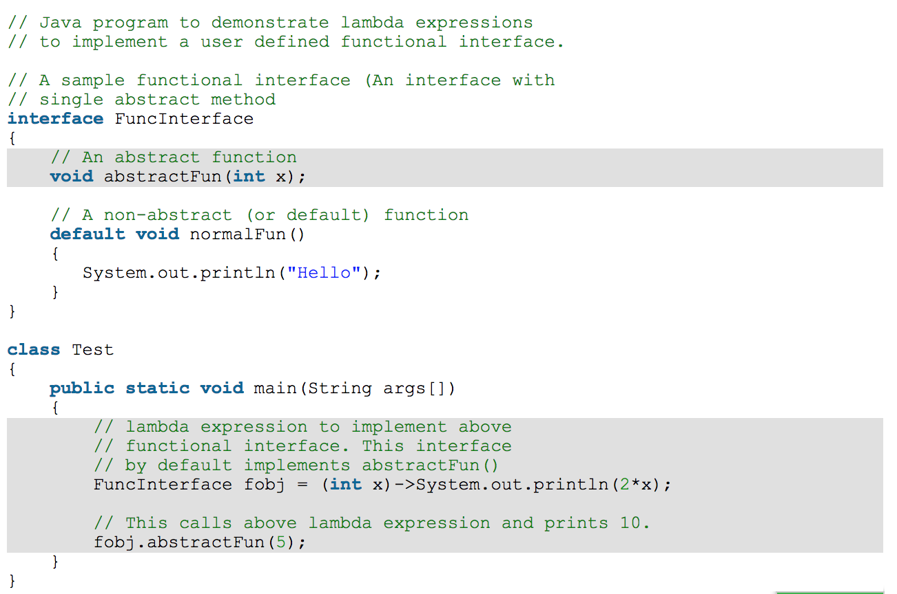

Introduction
Lambda expressions are anonymous methods which implement the single abstract method of a functional interface.
They enable you to pass functionality as an argument to another method. A lambda expression cannot
be generic, but the functional interface associated with it can be.
Lambda expressions were introduced in Java 8 and are backwards compatible. Prior to Java 8, anonymous inner classes were used to implement the abstract method of functional interfaces. Lambda expressions accomplish the same goal, but with less code.
Syntax

Characteristics of Lambda Expressions
- Optional type declaration of a parameter - The compiler can infer the type from the value of the parameter
- Optional parenthesis around parameter - Parentheses are only required for multiple parameters
- Optional curly braces - Curly braces are only required if the body contains multiple statements
- Optional return keyword - If the body has a single expression, the compiler automatically returns the value. To indicate that the expression returns a value, curly braces are required
Example
Important Notes:
- Lambdas are functions; they do not belong to any classes
- Lambda expressions can only be used to implement functional interfaces
- The body of a lambda expression can contain any number of statements. When there is more than one statement, these statements must be enclosed in curly brackets. The return type of the function must match the return type of the block